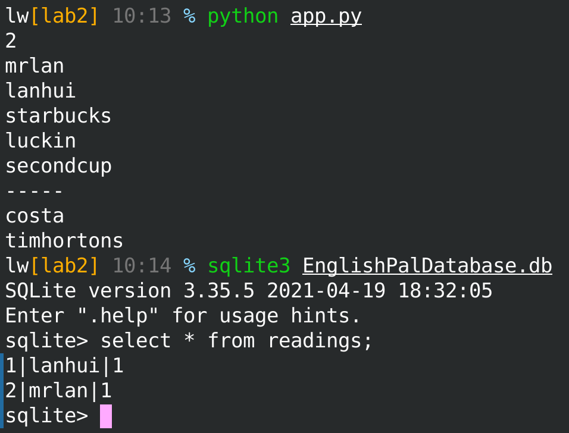

Lab2–The ORM Magic¶
- 小组成员信息
毛顿 201836900224
欧洲 201836900207
杨晗涵 201836900210
刘威 201836900222
来锦韬 201836900220
- 项目GitHub地址
- 项目Read The Docs地址
Abstract¶
理解并应用DIP，实现domain model与DB的依赖反转。
Introduction¶
此次实验主要是对于DIP（Dependency Inversion Principle），即依赖反转原则的一次应用。具体地说就是将一般情况下domain model对于persistence layer的依赖进行反转，使得数据库依赖（即调用）模型里的内容。
对关系性数据库的理解以及对于SQLAlchemy.orm的应用是完成这次试验的关键，尤其是模仿课程参考书中所采用的classical mapping（又叫imperative mapping）方法，写出试验代码。
Materials and Methods¶
Materials¶
SQLAlchemy SQLAlchemy官网
Architecture Patterns with Python Chapter2 关于DIP的描述
Methods¶
理解DIP的操作，分析其优缺点。
阅读参考书籍及所提供的代码，进一步理解DIP的实现细节。
分析实验代码，进行补充与调试。
Results¶
orm.py:
# Software Architecture and Design Patterns -- Lab 2 starter code
# Copyright (C) 2021 Hui Lan
from sqlalchemy import Table, MetaData, Column, Integer, String, Date, ForeignKey
from sqlalchemy.orm import mapper, relationship
import model
metadata = MetaData()
articles = Table(
'articles',
metadata,
Column('article_id', Integer, primary_key=True, autoincrement=True),
Column('text', String(10000)),
Column('source', String(100)),
Column('date', String(10)),
Column('level', Integer, nullable=False),
Column('question', String(1000)),
)
users = Table(
'users',
metadata,
Column('username', String(100), primary_key=True),
Column('password', String(64)),
Column('start_date', String(10), nullable=False),
Column('expiry_date', String(10), nullable=False),
)
readings = Table(
'readings',
metadata,
Column('id', Integer, primary_key=True, autoincrement=True),
Column('username', String(100), ForeignKey('users.username')),
Column('article_id', Integer, ForeignKey('articles.article_id')),
)
newwords = Table(
'newwords',
metadata,
Column('word_id', Integer, primary_key=True, autoincrement=True),
Column('username', String(100), ForeignKey('users.username')),
Column('word', String(20)),
Column('date', String(10)),
)
def start_mappers():
newwords_mapper = mapper(
model.NewWord,
newwords
)
article_mapper = mapper(
model.Article,
articles,
)
mapper(
model.User,
users,
properties={
'newwords': relationship(
newwords_mapper,
),
'_read': relationship(
model.Article, backref='users', secondary=readings, collection_class=list,
),
},
)
model.py:
# Software Architecture and Design Patterns -- Lab 2 starter code
# Copyright (C) 2021 Hui Lan
from dataclasses import dataclass
@dataclass
class Article:
article_id:int
text:str
source:str
date:str
level:int
question:str
class NewWord:
def __init__(self, username, word='', date='yyyy-mm-dd'):
self.username = username
self.word = word
self.date = date
class User:
def __init__(self, username, password='12345', start_date='2021-05-19', expiry_date='2031-05-19'):
self.username = username
self.password = password
self.start_date = start_date
self.expiry_date = expiry_date
self.newwords = []
self._read = []
def read_article(self, article):
self._read.append(article)
结果
Discussions¶
参照试验的handout和提供的代码，对已有的条件、要完成的目标以及做出的改动进行简要的分析。
条件分析¶
orm
这是实现DIP的关键部分，这里的各种Table根据各自的table name定义了一个个唯一的对象，每个Table中的Column对应数据表中的字段。里面的metadata较为特殊，简单的说就是它包含了Table的集合（即包含了所有的Table，同时也保有Table间外键的关系），对于之后数据库的创建以及关系的映射有着关键作用。
start_mappers()就是真正进行映射的操作了，用书上的话说就是，调用该函数，就能轻易的将数据库中的数据加载到domain model中或将domain model中的对象保存到数据库中; 而不调用该函数，domain model就能与数据库“保持距离”，实现了persistence ignorance.
model
这是domain model对于数据库中数据的对应对象表示，类中的属性对应于数据表中的字段，而read_article()之类的方法配合正确的映射则可实现一些“magic tricks”。
这里的Article类有些特殊，它只是罗列了一下属性名与对应的属性类型，若一个Python类只有这些内容则无法实例化。但Article类有@dataclass修饰符，它会自动生成__init__(), __repr__()等方法，算是比较规范的定义值对象的方法。
app
这是实际的逻辑代码，也可以说是简单的测试代码。先是一系列的准备工作，调用start_mappers()进行映射，利用metadata中的信息创建数据库，并创建了一个session,用于进行数据库的操作。
接下来分别是对于添加用户、单词、文章的测试以及对于model中User类里的read_article()进行检测，这有些测试驱动开发的意思。
目标分析¶
从数据出发
根据实验的handout可知应在orm.py中实现一个readings的Table对象，以表示user与article间的关系。
从测试出发
app.py中对于model中的User, Article, NewWord均有实例化，因此我们需要在start_mappers()中显式的进行映射。
app.py中出现了user.newwords，而model.py里User类并没有newwords属性，因此需要手动添加。
app.py中对于user.read_article()的测试说明了readings数据表需要在映射中与User._read属性进行关联。
改动分析¶
搭建映射
start_mappers()中我们首先要对上面目标分析的三个类进行映射，没有外键的类映射较为简单，如NewWord类与Article类，只需简单的调用mapper()（这个方法在官方文档中已不再推荐直接使用，可使用registry.map_imperatively()代替），并传入model里的类对象与对应的Table对象即可。
而User类就要考虑上述的newwords和_read属性了，因为users这个Table对象中并不包含这两个属性，我们要用到mapper()中的properties参数，它既可以在model类中（注意不是数据表中）增加Table对象中没有的属性，也可以指定该属性的一些信息，比如与其他类的关系（即外键等关系）。
因此对于newwords,我们要指定的relationship就是model.NewWord类与newwords这个Table对象的映射。这里可以直接传入上面所定义的newwords_mapper映射对象，也可以详细的指定，写为 ’newwords‘: relationship(model.NewWord, backref=’users’)
而_read则稍微麻烦些，因为这是个多对多关系的中间级数据表，因此在properties中需要额外提供一个secondary参数，提供readings这个Table对象; 也可以根据_read的类型额外的提供collection_class参数，这里是list。
使用映射
相对的，model.py里User类中read_article()的内容就要简单的多，只需往_read属性里添加传入的文章即可，session会自动往readings表中添加数据。
References¶
Architecture Patterns with Python Chapter2 关于DIP的描述
Code 参考书籍对应代码